"Primeiro,
a sensação."
Antes de escolher a mídia, definimos aquilo que precisa permanecer com o público. Medo, curiosidade, perda, beleza, estranheza ou esperança. O formato vem depois.
Jogos, livros e experiências narrativas desenvolvidos para continuar existindo depois do último capítulo, da última cena e da última escolha.
Para nós, uma obra não termina quando a página acaba ou quando a tela escurece. Ela permanece quando deixa memória, dúvida, conexão e consequência.
Antes de escolher a mídia, definimos aquilo que precisa permanecer com o público. Medo, curiosidade, perda, beleza, estranheza ou esperança. O formato vem depois.
Livros, jogos e outras experiências não existem como ilhas. Cada projeto pode ampliar, contradizer ou transformar aquilo que veio antes.
Não entregamos tudo pronto. Criamos espaço para observação, interpretação, escolhas e descobertas que pertencem a quem vive a experiência.
Cidades, personagens e conflitos são pensados para parecerem maiores do que a cena mostrada. O universo precisa dar a sensação de que continuaria existindo mesmo sem estar sendo observado.
O primeiro universo da Two Eyes On You. Uma narrativa construída entre livros, jogos e experiências conectadas.
Existem sinais, mas nenhuma informação pública foi autorizada.

Um universo sobre investigação, memória, poder e consequências. Sua primeira porta de entrada é Arcanian: Devaneios.
Acompanhe o estúdio, descubra nossos universos e participe das próximas etapas.